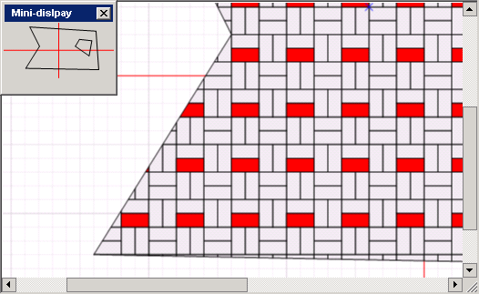
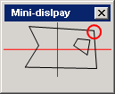
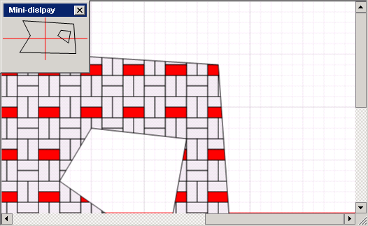

The mini-display is a feature developed to help you easily navigate on large drafts: press the Mini-display button on the toolbar to open a window displaying the small copy of your draft. To quickly navigate to a distant part of you draft, choose the approximate point on the mini-display and click it.
For example, currently you are viewing the bottom left corner of the draft:

If you click the point, as its displayed on the image below:

The program will move you to specified point on the draft:

Note that you can resize the mini-display window to improve the accuracy of targeting and navigation.